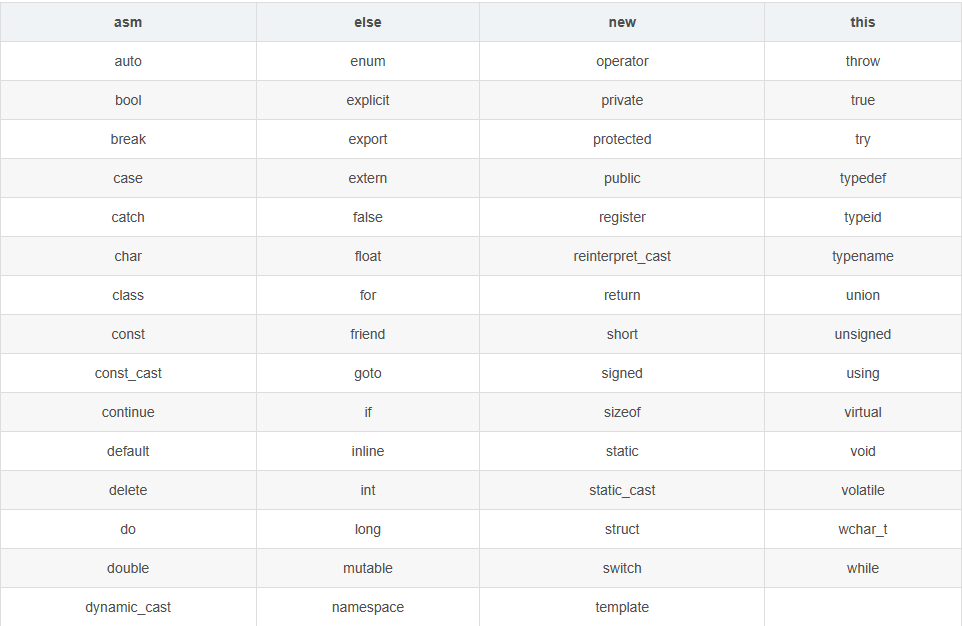
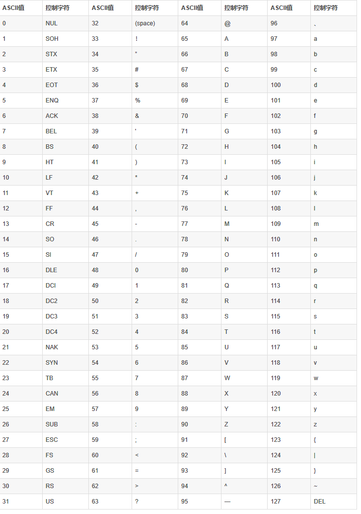
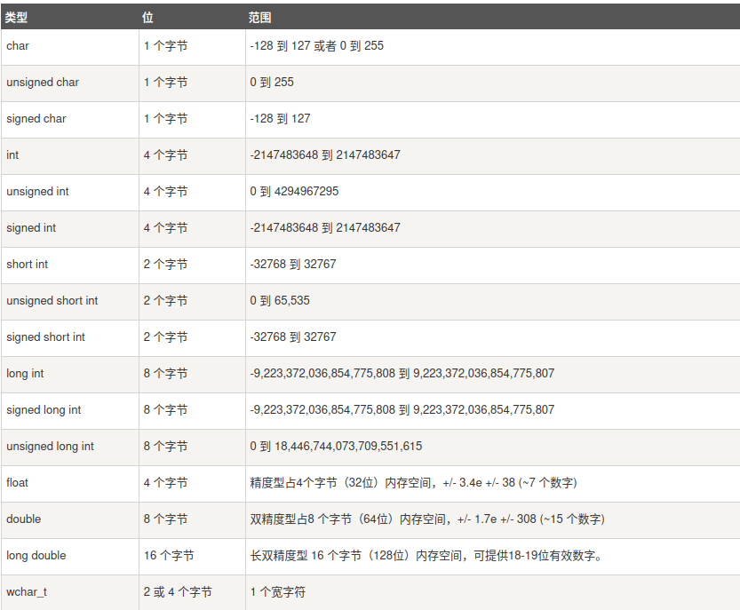
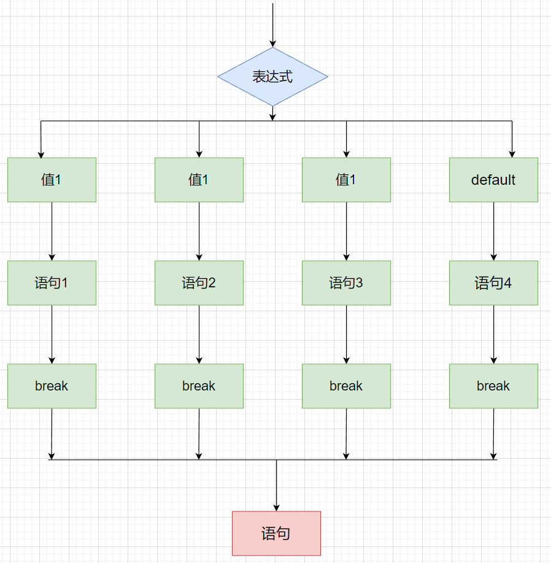

C++ 是一种静态类型的、编译式的、通用的、大小写敏感的、不规则的编程语言，支持过程化编程、面向对象编程和泛型编程。
C++既可以进行C语言的过程化程序设计，又可以进行以抽象数据类型为特点的基于对象的程序设计，还可以进行以继承和多态为特点的面向对象的程序设计。C++擅长面向对象程序设计的同时，还可以进行基于过程的程序设计。 C++几乎可以创建任何类型的程序：游戏、设备驱动程序、HPC、云、桌面、嵌入式和移动应用等。 甚至用于其他编程语言的库和编译器也使用C++编写。
标准库：
核心语言，提供了所有构件块，包括变量、数据类型和常量，等等。
C++ 标准库，提供了大量的函数，用于操作文件、字符串等。
标准模板库（STL），提供了大量的方法，用于操作数据结构等。
xxxxxxxxxx61//单行注释2
3/*4多行注释5多行注释6*/
标识符是用来标识变量、函数、类、模块，或任何其他用户自定义项目的名称。一个标识符以字母 A-Z 或 a-z 或下划线 _ 开始，后跟零个或多个字母、下划线和数字（0-9）。
标识符内不允许出现标点字符，比如 @、& 和 %。C++ 是区分大小写的编程语言。
xxxxxxxxxx91using namespace std;3 4// main() 是程序开始执行的地方5int main()6{7 cout << "Hello World" << endl; // 输出 Hello World8 return 0;9}| 类型 | 关键字 |
|---|---|
| 布尔型 | bool |
| 字符型 | char |
| 整型 | int |
| 浮点型 | float |
| 双精度浮点型 | double |
| 无类型 | void |
类型修饰符：
signed
unsigned（无符号）
short
long
修饰符 signed、unsigned、long 和 short 可应用于整型，signed 和 unsigned 可应用于字符型，long 可应用于双精度型。
修饰符 signed 和 unsigned 也可以作为 long 或 short 修饰符的前缀。例如：unsigned long int。
C++ 允许使用速记符号来声明无符号短整数或无符号长整数。您可以不写 int，只写单词 unsigned、short 或 long，int 是隐含的。例如，下面的两个语句都声明了无符号整型变量。
注：

单个字符（使用单引号引用）（只能放单个字符）
不可用双引号
举例
xxxxxxxxxx31char a = 'a';2cout << a << "\t" << sizeof(a) << endl; // a 13cout << (int)a << endl; // 97xxxxxxxxxx21char c_char[]="hello world\0";//双引号 (数组形式)2printf("%s\n",c_char);xxxxxxxxxx21const char* c_char="hello world\0";//双引号 (数组形式)2std::cout << *c_char << std::endl;string 变量名 = "......"
xxxxxxxxxx21string a="hello world!";2cout<<a<<endl;可以获取各数据类型在内存中所占的字节数
举例
xxxxxxxxxx61cout << sizeof(int) << endl; // 42cout << sizeof(char) << endl; // 13cout << sizeof(bool) << endl; // 14cout << sizeof(long) << endl; // 85cout << sizeof(float) << endl; // 46cout << sizeof(double) << endl; // 8注意
指针变量的大小与指向对象无关，和计算机内部地址总线相关。
xxxxxxxxxx61int a = 10;2int *p = &a;3cout << sizeof(p) << endl; // 84long b = 10;5long *p_l = &b;6cout << sizeof(p_l) << endl; // 8不同的机器、操作系统、编译器的数据长度不同
其他基本数据类型所占内存空间

typedef为一个已有的类型取一个新的名字
格式
typedef + [type] +[new_name]
举例
xxxxxxxxxx31typedef int new_int;2new_int a = 20;3cout << sizeof(new_int) << endl; // 4变量其实只不过是程序可操作的存储区的名称。C++ 中每个变量都有指定的类型，类型决定了变量存储的大小和布局，该范围内的值都可以存储在内存中，运算符可应用于变量上。
格式
xxxxxxxxxx11[type] <typeName>
局部变量：在函数或一个代码块内部声明的变量，它们只能被函数内部或者代码块内部的语句使用
形参变量：在函数参数的定义中声明的变量。
全局变量：在所有函数外部声明的变量。全局变量的值在程序的整个生命周期内都是有效的。
全局变量可以被任何函数访问。也就是说，全局变量一旦声明，在整个程序中都是可用的。
当局部变量被定义时，系统不会对其初始化，您必须自行对其初始化。定义全局变量时，系统会自动初始化值
转义字符
| 转移字符 | 含义 |
|---|---|
| 换行 | \n |
| 反斜杠 | \\ |
| 水平制表符(整齐输出数据) | \t |
| 警示音 | \a |
| 回车 | \r |
存储类定义 C++ 程序中变量/函数的范围（可见性）和生命周期。这些说明符放置在它们所修饰的类型之前。
| auto | register | static | extern | mutable | thread_local |
|---|
注意
从 C++ 17 开始，auto 关键字不再是 C++ 存储类说明符，且 register 关键字被弃用。
thread_local 是C++11支持
自 C++ 11 以来，auto 关键字用于两种情况：声明变量时根据初始化表达式自动推断该变量的类型、声明函数时函数返回值的占位符。
xxxxxxxxxx91auto f=3.14; //double2auto s("hello"); //const char*3auto z = new auto(9); // int*4auto x1 = 5, x2 = 5.0, x3='r';//错误，必须是初始化为同一类型5
6
7auto a = 10;8cout << sizeof(a) << endl; // 49cout << typeid(a).name() << endl; // iregister 存储类用于定义存储在寄存器中而不是 RAM 中的局部变量。这意味着变量的最大尺寸等于寄存器的大小（通常是一个词），且不能对它应用一元的 '&' 运算符（因为它没有内存位置）。
寄存器只用于需要快速访问的变量。
static 存储类指示编译器在程序的生命周期内保持局部变量的存在，而不需要在每次它进入和离开作用域时进行创建和销毁。因此，使用 static 修饰局部变量可以在函数调用之间保持局部变量的值。
static 修饰符也可以应用于全局变量。当 static 修饰全局变量时，会使变量的作用域限制在声明它的文件内。
** extern** 存储类用于提供一个全局变量的引用，全局变量对所有的程序文件都是可见的。当您使用 'extern' 时，对于无法初始化的变量，会把变量名指向一个之前定义过的存储位置。
举例
xxxxxxxxxx111// test.cpp2int test = 20;3
4// main.cpp5extern int test;6
7int main(int argc, char *argv[])8{9 cout << test << endl;// 2010 return 0;11}使用 thread_local 说明符声明的变量仅可在它在其上创建的线程上访问。 变量在创建线程时创建，并在销毁线程时销毁。 每个线程都有其自己的变量副本。
对于这些关键字的使用，后面还有更加详细的认识。
++a /--a 先自身++/--，再表达式运算
xxxxxxxxxx21int a=10;2int b=++a * 10; //a=11 b=110a++ / a-- 先表达式运算，再自身++/--
xxxxxxxxxx21int a=10;2int b=a++ * 10; //a=11 b=100| 运算符 | 术语 | 示例 | 结果 |
|---|---|---|---|
| = | 赋值 | a=2;b=3; | a=2;b=3; |
| += | 加等于 | a=0;a+=2; | a=2; |
| -= | 减等于 | a=5;a-=3; | a=2; |
| *= | 乘等于 | a=2;a*=2 | a=4; |
| /= | 除等于 | a=4;a/=2; | a=2 |
| %= | 模等于 | a=3;a%=2; | a=1; |
a和b 比较 谁大返回谁
xxxxxxxxxx31int a=10,b=20,c;2c = a > b ? a:b;3cout<<c<<endl; // c=20xxxxxxxxxx41if(boolean_expression)2{3 // 如果布尔表达式为真将执行的语句4}如果布尔表达式为 true，则 if 语句内的代码块将被执行。如果布尔表达式为 false，则 if 语句结束后的第一组代码（闭括号后）将被执行。
C 语言把任何非零和非空的值假定为 true，把零或 null 假定为 false。
示例
xxxxxxxxxx141using namespace std;3 4int main ()5{6 int a = 10;7 if( a < 20 )8 {9 cout << "a 小于 20" << endl;10 }11 cout << "a ： " << a << endl;12 13 return 0;14}xxxxxxxxxx71if(int_expression = 1) {2 // 如果为1执行3}else if(int_expression = 2) {4 // 如果为2执行5}else {6 // 其他结果执行7}如果布尔表达式为 true，则执行 if 块内的代码。如果布尔表达式为 false，则执行 else 块内的代码。
首先计算出表达式的值
和case依次比较，一旦有对应的值，就会执行相应的语句，在执行的过程中，遇到break就会结束。
如果所有的case都和表达式的值不匹配，就会执行default语句体部分，然后程序结束掉。
xxxxxxxxxx171switch (n) {2 case 1:3 语句1;4 break;5 case 2:6 语句2;7 break;8 case 3:9 语句3;10 break;11 case 4:12 语句4;13 break;14 default:15 默认语句16 break;17}
表达式类型
支持 byte、short、int、char、string、枚举
不支持 double、float、long
case给出的值不允许重复，只能为字面量，不可为常量
注意 break，防止循环穿透
语法
xxxxxxxxxx41while(condition)2{3 statement(s);// 语句体4}condition 可以是任意的表达式，当为任意非零值时都为真。
当条件为真时执行循环。
当条件为假时，程序流将继续执行紧接着循环的下一条语句。
有时当条件不满足时，根本不执行while循环，直接执行下一条语句。
举例
xxxxxxxxxx131using namespace std;3 4int main ()5{6 int a = 10;7 while( a < 20 )8 {9 cout << "a ：" << a << endl;10 a++;11 }12 return 0;13}xxxxxxxxxx51do2{3 statement(s);4
5}while( condition );条件表达式出现在循环的尾部，所以循环中的 statement(s) 会在条件被测试之前至少执行一次。
如果条件为真，控制流会跳转回上面的 do，然后重新执行循环中的 statement(s)。这个过程会不断重复，直到给定条件变为假为止。
示例
xxxxxxxxxx141using namespace std;3 4int main ()5{6 int a = 10;7 do8 {9 cout << "a ：" << a << endl;10 a++;11 }while( a < 20 );12 13 return 0;14}xxxxxxxxxx41for ( init; condition; increment )2{3 statement(s);// 语句体4}下面是 for 循环的控制流：
init 会首先被执行，且只会执行一次。这一步允许您声明并初始化任何循环控制变量。您也可以不在这里写任何语句，只要有一个分号出现即可。
接下来，会判断 condition。如果为真，则执行循环主体。如果为假，则不执行循环主体，且控制流会跳转到紧接着 for 循环的下一条语句。
在执行完 for 循环主体后，控制流会跳回上面的 increment 语句。该语句允许您更新循环控制变量。该语句可以留空，只要在条件后有一个分号出现即可。
条件再次被判断。如果为真，则执行循环，这个过程会不断重复（循环主体，然后增加步值，再然后重新判断条件）。在条件变为假时，for 循环终止。
迭代循环
xxxxxxxxxx61int my_array[5] = {1, 2, 3, 4, 5};2for (int &x : my_array) {4x *= 2;5cout << x << endl;6}
语法
xxxxxxxxxx41goto label;2..3.4label: statement;label 是识别被标记语句的标识符，可以是任何除 C++ 关键字以外的纯文本。标记语句可以是任何语句，放置在标识符和冒号（:）后边。
跳转语句
xxxxxxxxxx51int a=10,b=20;2goto FLAG;3a=30;4FLAG:5cout<<a<<endl; //a=10C++ 中 break 语句有以下两种用法：
当 break 语句出现在一个循环内时，循环会立即终止，且程序流将继续执行紧接着循环的下一条语句。
它可用于终止 switch 语句中的一个 case。
如果您使用的是嵌套循环（即一个循环内嵌套另一个循环），break 语句会停止执行最内层的循环，然后开始执行该块之后的下一行代码。
C++ 中的 continue 语句有点像 break 语句。但它不是强迫终止，continue 会跳过当前循环中的代码，强迫开始下一次循环。
对于 for 循环，continue 语句会导致执行条件测试和循环增量部分。对于 while 和 do...while 循环，continue 语句会导致程序控制回到条件测试上。